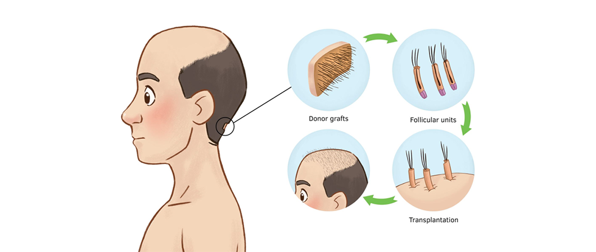
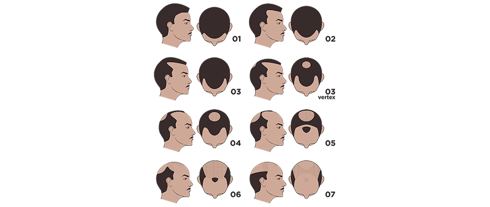
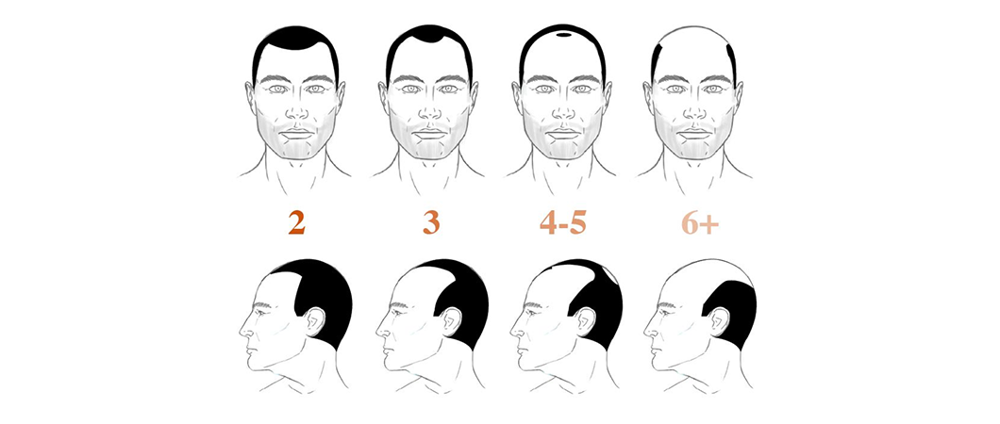

زراعة الشعر
تعتبر زراعة الشعر إجراءً تجميلياً شاع استخدامه في السنوات الأخيرة بتقنيات متطورة ودون شعور بالألم، ويتم ذلك عبر الاستعانة بمناطق أخرى مانحة من الجسم

أسباب الصلع عند الرجال وطرق العلاج
الصلع عند الرجال يبدأ بتساقط الشعر بمعدل طبيعي، يصل تقريباً إلى 100 شعرة في اليوم الواحد، ليعود وينمو مرة أخرى، دون أن يلاحظ الشخص أي تغيير في كثافة شعره، لكن عندما يتساقط الشعر دون أن ينمو مرة أخرى، عند ذلك يدرك الشخص وجود نقص في كثافة شعره، ويبدأ في التفكير في الأسباب المؤدية لذلك.
جدول المحتويات
تعالوا معنا من خلال موقع علاجك الطبية لنتعرف على أسباب الصلع عند الرجال وأعراضه، وماهي طرق علاجه؟ سواء كان طبياً أم طبيعياً.

أسباب الصلع عند الرجال
يفقد الرجال عادة شعرهم عندما تتحد 3 عوامل رئيسية: الوراثة والعمر والهرمونات. ويحدث الصلع المعروف باسم ثعلبة الذكورة عند تغير مستويات الهرمونات على مدار حياة الرجل.
تسهم العوامل الوراثية أيضاً في احتمال حدوث الصلع عند الذكور.
وتساهم هذه العوامل الثلاثة في الانكماش التدريجي للتجاويف الصغيرة في الجلد عند قاعدة الشعر، والمعروفة باسم بصيلات شعر فروة الرأس. مما يؤدي إلى نمو الشعر بشكل أقصر وأكثر دقة، حتى ينعدم نمو شعر جديد.
أسباب الصلع المبكر عند الشباب
- الوراثة: تساهم العوامل الوراثية من أحد الأبوين أو من أحد الأقارب في حدوث الصلع.
- الثعلبة : مرض الثعلبة alopecia من أكثر الأمراض الجلدية انتشاراً ، ويعرف على أنه تساقط الشعر في منطقة معينة من شعر الرأس أو شعر الوجه، وفي بعض الحالات قد يمتد تساقط الشعر ليشمل الرأس والرموش والحواجب والجسم بشكل عام، وقد سمي بهذا الاسم لأنه في فرو الثعالب يتواجد مناطق من دون شعر.
- العوامل النفسية: مثل التوتر والضغوط العصبية.
- الأمراض العضوية: مثل فقر الدم ونقص الفيتامينات.
- الأدوية: مثل العلاج الكيميائي والمثبطات المناعية، وبعض المنتجات التي تعمل على تضخيم العضلات.
- الالتهابات: بعض الالتهابات التي تصيب فروة الرأس، مثل الالتهابات الفطرية، إذا لم يتم علاجها مبكراً.
- الهرمونات: مثل كسل الغدة الدرقية.
- المواد الكيميائية: بعض المواد الكيميائية لفرد الشعر وتصفيفه، كالجل والواكس وبعض أنواع الشامبو.
أسباب الصلع في مقدمة الرأس
- جينات الصلع التي تنتقل من الآباء للأبناء ويسمى الصلع الوراثي .
- التقدم في السن، والتوتر والضغط العصبي.
- فقدان الوزن بصورة كبيرة ومفاجئة.
- تغير نسبة الهرمونات في الجسم، بسبب تناول الأدوية التي تسبب خللاً في إفراز الهرمونات، مثل المنشطات.
- الالتهابات التي تصيب مقدمة الرأس، مثل الالتهابات الفطرية إذا لم يتم علاجها مبكراً .
- الثعلبة في مقدمة الرأس تحديداً.
أسباب ظهور بقع صلع في الرأس
- جينات الصلع التي تنقل من الآباء للأبناء
- الالتهابات التي تصيب منتصف أو وسط الرأس، مثل الالتهابات الفطرية إذا لم يتم علاجها مبكراً.
- الثعلبة في منتصف أو وسط الرأس.
علامات الصلع عند الرجال
تم تقييم الصلع باستخدام نظام تصنيفHamilton-Norwood ، إذ يركز هذا النظام على التعرف على 3 أنماط رئيسية محتملة لفقدان الشعر، ويمكن رؤيتهم في:
-
الصدغ في الرأس
يبدأ الشعر يستدق (يزداد رقة) شيئاً فشيئاً حول الصدغ، وفي أعلى الجزء الخلفي من الرأس الذي يسمى تاج الرأس. -
انحسار خط الشعر
يبدأ الشعر يستدق وينحسر حول مقدمة الرأس والجانبين، وغالباً ما يسمى خط الشعر المتراجع. -
تساقط الشعر في قمة الرأس
يزاد الشعر رقة في الجزء العلوي من الرأس مع مرور الوقت، فلن تشعر بالصلع بين عشية وضحاها، ومن المحتمل أن تلاحظ ترقق الشعر في أعلى رأسك لسنوات عديدة، قبل أن يصبح الصلع ملحوظاً بالكامل.
من أكثر أنواع ترقق الشعر شيوعاً لدى الرجال هو خط الشعر المتراجع، الذي على شكل M حيث ينحسر الجانبان بمعدل أسرع من منتصف فروة الرأس.
علاج الصلع عند الرجال
- عمليات زراعة الشعر: تعتبر أفضل طريقة لعلاج الصلع، وتختلف أساليبها وطرقها ونتائجها، حيث إن نتائج الطرق الحديثة أكثر إرضاء وفعالية.
- العلاج بالليزر :يعد الليزر من أكثر الأساليب الآمنة في العلاج، وهي فعالة لعلاج فقدان الشعر لدى الذكور؛ حيث يقلل من التهابات مسام الجلد، التي تحارب نمو الشعر من جديد.
إذا كان فقدان الشعر ناتجاً عن حالة مؤقتة، مثل المرض أو الدواء أو الإجهاد أو نقص الحديد، فإن تساقط الشعر سيتوقف عند حل المشكلة.
علاج الصلع عند الرجال طبيعياً
1. البصل
يعد البصل من أكثر الأطعمة فائدة، ومن أقدم الوصفات التي استعملت في علاج الصلع، فهو يقوم بزيادة سرعة نمو الشعر بصورة طبيعية، حيث يحتوي البصل على عنصر الكبريت، الذي يزيد من قدرة الجسم على صنع مادة الكولاجين. والتي تعتبر المادة الأساسية لتكوين الشعر، مما يفيد في نمو الشعر بسرعة.
ويمكن استخدام البصل في علاج الصلع، من خلال هرس شرائح البصل جيداً، حتى تتمكن من استخراج السائل العصيري بشكل كامل، ثم ضع العصير على فروة الرأس، واتركه ربع ساعة تقريباً، ثم اغسل شعرك جيداً، ويفضل استخدام الشامبو لمنع تهيج الجلد.
2. خليط زيت الخروع وجوز الهند
يمكن استعمال خليط من زيت الخروع وزيت جوز الهند، لزيادة كثافة الشعر في منطقة مقدمة الرأس، حيث سيزيد كل منهما من انتعاش فروة الرأس، وتدفق الدورة الدموية إلى المنطقة المصابة بالصلع، مما يزيد من نمو الشعر بصورة كبيرة وفي وقت قصير.
في هذا النوع من العلاج ستحتاج إلى: نصف كوب من زيت الخروع، بالإضافة لنصف كوب من زيت جوز الهند، قم بخلط زيت الخروع وزيت جوز الهند سوياً في إناء، ثم استعمل الخليط في تدليك المنطقة المصابة بالصلع، واستمر في العملية مدة 5 دقائق، ثم اترك الزيوت على فروة الرأس لمدة 60 دقيقة، قبل غسلها جيداً باستعمال الماء، كرر العملية لمدة مرتين إلى 3 مرات أسبوعياً لتحقيق نتائج أفضل.
3. بذور الليمون والفلفل الأسود
تعد هذه المكونات من الوصفات الفعالة والسريعة للتخلص من الصلع بشكل طبيعي، حيث تساعد بذور الليمون والفلفل الأسود على تنشيط الدورة الدموية لبصيلات الشعر، وتحفيزها في فروة الرأس، ومكونات هذه الطريقة هي:
- 7 حبات من بذور الليمون.
- 10 حبات من الفلفل الأسود.
أما طريقة التحضير فهي على الشكل التالي:
- تطحن بذور الليمون والفلفل؛ للحصول على مسحوق ناعم.
- يتم وضع المسحوق على بقع الصلع في فروة الرأس، ويترك عليها مدة 10-15 دقيقة.
- تكرر الطريقة مرتين يومياً، ولمدة بضعة أسابيع.
- يمكن إضافة القليل من عصير الليمون إلى المسحوق، إن كان الجفاف شديداً.
4. الزنجبيل وزيت الزيتون
يحفز الزنجبيل الدورة الدموية في فروة الرأس، وذلك لاحتوائه على مركبات بيولوجية نشطة، تجدد بصيلات الشعر، ومكونات هذه الطريقة هي:
- 2سم من جذور الزنجبيل.
- ملعقتان كبيرتان من زيت الزيتون، أو زيت الجوجوبا.
وتكون طريقة التحضير من خلال:
- هرس الزنجبيل ثم نقعه في الزيت لمدة عدة دقائق.
- وضع الزيت مع قطع الزنجبيل على فروة الرأس، والتدليك لمدة 2-3 دقائق.
- ترك الخليط على فروة الرأس لمدة 30 دقيقة، ثم غسل الشعر باستخدام الشامبو كالمعتاد.
- تكرار الطريقة بانتظام مرتين أسبوعياً، ولمدة عدة أسابيع.
5. علاج الصلع بالثوم
قم بتقشير رأس ثوم، واطحنه جيداً، ومرره على المناطق المصابة، كرر ذلك لمرتين في كل يوم، وبالاستمرار في هذه العملية يتم تحفيز الشعر على النمو من جديد، لما للثوم من فاعلية كبيرة في ذلك.
6. علاج الصلع بالأعشاب
- ينصح بتناول الخيار والجزر والجرجير؛ لاحتوائها على فيتامين A ، المفيد في علاج الصلع الوراثي، إذ يتم أكل الخيار أو الجزر بعد تقشيره. أما الجرجير فيتم تناول قضمة منه على مدار اليوم كله.
- نبات الجنسنج مفيد لعلاج الصلع.
- نبات الجنكة مفيد لعلاج الصلع.
- الشاي الأخضر.
- نبات ذيل الحصان.
- نبات العرقسوس.
- زيت حب القرع.
7. علاج الصلع بالزيوت
لعلاج الصلع بالزيوت اعمل خليطاً مكوناً من زيت حصا البان، وزيت الزعتر، وزيت اللافندر، وزيت الجرجير وزيت البصل وزيت الصبار وزيت حب الرشاد، حيث يتم وضع هذه الزيوت كلها على الشعر، بعد القيام بغسله كل يوم مساء.
- المداومة على استخدام زيت الزيتون وزيت السمسم.
- غلي الهيلج بزيت الزيتون وطحنه به، ودهن فروة الرأس به.

علاج الصلع الوراثي طبياً
إذا بدأت في فقدان الشعر من خلال الحالة الوراثية، فقد تستطيع تقليل عملية التساقط باستخدام بعض الأدوية، مثل:
مينوكسيديل Minoxidil
يمكن أن يساعد هذا الدواء على إبطاء المزيد من تساقط الشعر خلال 4 إلى 8 شهور، وإعادة نمو الشعر، ويعد فعالاً للرجال أكثر بنسبة 50% من النساء.
فيناسترايد Finasteride
هو حبة دوائية تثبط من تكوين هرمون التستوستيرون الذي يؤثر على نمو الشعر، وتشير الدراسات إلى أن الفيناسترايد يساعد على منع تساقط الشعر بنسبة تصل إلى 99٪ من الرجال المصابين بالصلع الوراثي، وأن ثلثي هؤلاء يتمتعون بنمو جديد للشعر، ولا ينصح أبداً بإيقاف استخدام هذا الدواء، حيث تفقد بسرعة أي فوائد منه بمجرد إيقافه.
بروبيكيا Propecia
هذه وصفة طبية لعلاج تساقط الشعر الوراثي لدى الرجال، حيث يعمل على منع تحويل هرمون التستوستيرون إلى ديهيدروتستوستيرون، بحيث لا تتأثر بصيلات الشعر وتعود إلى طبيعتها.

علاج الصلع عبر زراعة الشعر في تركيا
اطلع على أحدث المنشورات والأخبار الطبية
عمليات شفط الدهون بالفيزر في تركيا والأسعار 2021
يعتبر شفط الدهون بالفيزر من أفضل عمليات علاج السمنة المفرطة. تعرف معنا على مميزات وعيوب شفط الدهون بالفيزر وكيف تتم العملية وشاهد الفرق قبل وبعد في تركيا.
طرق علاج طول النظر في تركيا وأحدث التقنيات
يعاني الكثير من كبار السن وحتى البالغين من مرض طول النظر . سنتحدث في هذا المقال عن كيفية علاج طول النظر وأسباب هذا المرض ونسبة نجاح العلاج .
الفرق بين زراعة الشعر في ايران وتركيا 2021
بالرغم من أن أسعار زراعة الشعر بين تركيا وايران لا تختلف كثيرا إلا أن هنالك الكثير من الفروق التي قد تحدد لك الدولة الأفضل لزراعة الشعر فيها.
طرق علاج قصر النظر في تركيا وأحدث التقنيات
يعاني الكثير من الأطفال وحتى البالغين من مرض قصر النظر. سنتعرف في هذا المقال على أفضل طرق علاج قصر النظر وأسباب هذا المرض ونسبة نجاح العلاج .